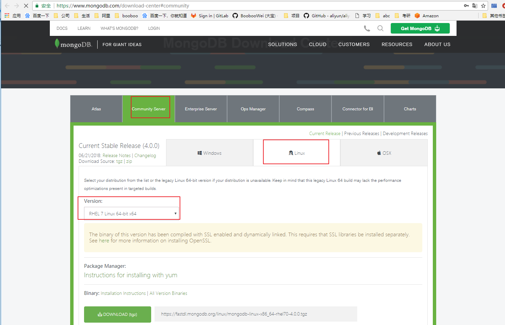
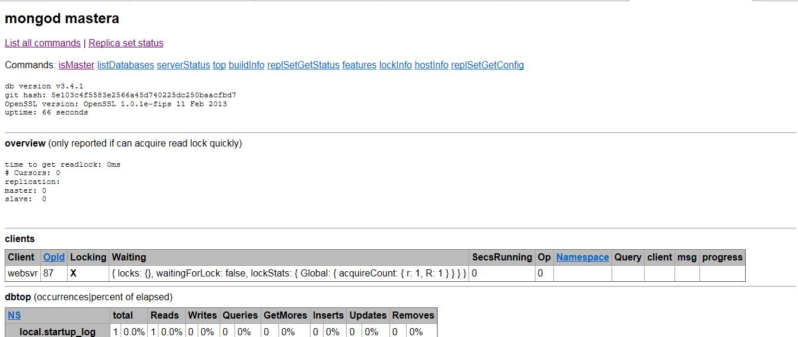

MongoDB 下载 MongoDB提供了可用于32位和64位系统的预编译二进制包，你可以从MongoDB官网下载安装，MongoDB预编译二进制包下载地址：http://www.mongodb.org/downloads

实验环境为rhel7.2 mongodb 3.4.1 mastera 192.168.196.11
1.下载到本地并解压
安装指南可以查看压缩后的README
[root@mastera ~]# cd /tmp [root@mastera tmp]# ls mongodb-linux-x86_64-rhel70-3.4.1.tgz mysql_scripts.zip [root@mastera tmp]# tar -xf mongodb-linux-x86_64-rhel70-3.4.1.tgz -C /usr/local/ [root@mastera tmp]# cd /usr/local [root@mastera local]# ls bin etc games include lib lib64 libexec mongodb-linux-x86_64-rhel70-3.4.1 sbin share src [root@mastera local]# cd mongodb-linux-x86_64-rhel70-3.4.1/ [root@mastera mongodb-linux-x86_64-rhel70-3.4.1]# ls bin GNU-AGPL-3.0 MPL-2 README THIRD-PARTY-NOTICES [root@mastera mongodb-linux-x86_64-rhel70-3.4.1]# ln -s /usr/local/mongodb-linux-x86_64-rhel70-3.4.1/ /usr/local/mongodb [root@mastera mongodb-linux-x86_64-rhel70-3.4.1]# cd /usr/local/mongodb [root@mastera mongodb]# pwd /usr/local/mongodb
2.将可执行文件路径加入PATH变量中，并永久生效
[root@mastera mongodb]# echo "export PATH=$PATH:/usr/local/mongodb/bin" >> /etc/bashrc [root@mastera mongodb]# source /etc/bashrc [root@mastera mongodb]# ls bin bsondump mongo mongod mongodump mongoexport mongofiles mongoimport mongooplog mongoperf mongoreplay mongorestore mongos mongostat mongotop [root@mastera mongodb]# which mongo /usr/local/mongodb/bin/mongo
3.创建数据库目录和日志目录
MongoDB 默认的启动的数据库路径是 /data/db 。
[root@mastera mongodb]# mkdir /mongodb/data/db -p [root@mastera mongodb]# mkdir /mongodb/data/log -p
4.运行 MongoDB 服务
1)命令行参数运行 MongoDB 服务
可以在命令行中执行mongo安装目录中的bin目录执行mongod命令来启动mongdb服务。
—dbpath 指定数据路径
—logpath 指定日志路径
—logappend 指定日志追加
—port 指定监听端口
[root@mastera mongodb]# mongod --dbpath /mongodb/data/db/ --logpath /mongodb/data/log/mongodb.log --logappend & [1] 1714
这里有四个警告
访问权限问题
进程执行用户为root问题
内核参数/sys/kernel/mm/transparent_hugepage/enabled
内核参数/sys/kernel/mm/transparent_hugepage/defrag
[root@mastera mongodb]# cat /sys/kernel/mm/transparent_hugepage/enabled [always] madvise never [root@mastera mongodb]# echo never > /sys/kernel/mm/transparent_hugepage/enabled [root@mastera mongodb]# cat /sys/kernel/mm/transparent_hugepage/enabled always madvise [never] [root@mastera mongodb]# echo never > /sys/kernel/mm/transparent_hugepage/defrag [root@mastera mongodb]# cat /sys/kernel/mm/transparent_hugepage/defrag always madvise [never]
查看守护进程为mongod，监听端口为27017
[root@mastera mongodb]# ps -ef|grep mongo root 1714 1585 0 21:50 pts/0 00:00:00 mongod --dbpath /mongodb/data/db/ --logpath /mongodb/data/log/mongodb.log --logappend root 1736 1585 0 21:51 pts/0 00:00:00 grep --color=auto mongo [root@mastera mongodb]# netstat -luntp|grep mongo tcp 0 0 0.0.0.0:27017 0.0.0.0:* LISTEN 1714/mongod
2)配置文件启动 MongoDB 服务
新建配置文件存放路径/mongodb/mongodb.cnf
[root@mastera mongodb]# vim /mongodb/mongodb.cnf dbpath=/mongodb/data/db logpath=/mongodb/data/log/mongodb.log logappend=true port=27017 [root@mastera mongodb]# mongod -f /mongodb/mongodb.cnf & [1] 1762 [root@mastera mongodb]# ps -ef|grep mongo root 1762 1585 1 22:00 pts/0 00:00:00 mongod -f /mongodb/mongodb.cnf root 1780 1585 0 22:00 pts/0 00:00:00 grep --color=auto mongo [root@mastera mongodb]# netstat -luntp|grep mongo tcp 0 0 0.0.0.0:27017 0.0.0.0:* LISTEN 1762/mongod
5.MongoDB后台管理 Shell
如果你需要进入MongoDB后台管理，你需要先打开mongodb装目录的下的bin目录，然后执行mongo命令文件。
MongoDB Shell是MongoDB自带的交互式Javascript shell,用来对MongoDB进行操作和管理的交互式环境。
当你进入mongoDB后台后，它默认会链接到 test 文档（数据库）：
[root@mastera mongodb]# mongo MongoDB shell version v3.4.1 connecting to: mongodb://127.0.0.1:27017 MongoDB server version: 3.4.1 Welcome to the MongoDB shell. For interactive help, type "help". For more comprehensive documentation, see http://docs.mongodb.org/ Questions? Try the support group http://groups.google.com/group/mongodb-user Server has startup warnings: 2017-01-16T22:00:11.868+0800 I CONTROL [initandlisten] 2017-01-16T22:00:11.868+0800 I CONTROL [initandlisten] ** WARNING: Access control is not enabled for the database. 2017-01-16T22:00:11.868+0800 I CONTROL [initandlisten] ** Read and write access to data and configuration is unrestricted. 2017-01-16T22:00:11.868+0800 I CONTROL [initandlisten] ** WARNING: You are running this process as the root user, which is not recommended. 2017-01-16T22:00:11.868+0800 I CONTROL [initandlisten]
由于它是一个JavaScript shell，您可以运行一些简单的算术运算:
可以输入help获取帮助
> help db.help() help on db methods db.mycoll.help() help on collection methods sh.help() sharding helpers rs.help() replica set helpers help admin administrative help help connect connecting to a db help help keys key shortcuts help misc misc things to know help mr mapreduce show dbs show database names show collections show collections in current database show users show users in current database show profile show most recent system.profile entries with time >= 1ms show logs show the accessible logger names show log [name] prints out the last segment of log in memory, 'global' is default use <db_name> set current database db.foo.find() list objects in collection foo db.foo.find( { a : 1 } ) list objects in foo where a == 1 it result of the last line evaluated; use to further iterate DBQuery.shellBatchSize = x set default number of items to display on shell exit quit the mongo shell
现在让我们插入一些简单的数据，并对插入的数据进行检索：
> db.runoob.insert({x:10}) WriteResult({ "nInserted" : 1 }) > db.runoob.find() { "_id" : ObjectId("587cd2d4ba6fb83076d228f0"), "x" : 10 }
第一个命令将数字 10 插入到 runoob 集合的 x 字段中。
6.MongoDb web 用户界面
3.2 版后已移除: HTTP interface for MongoDB [http://www.mongoing.com/docs/administration/monitoring.html ]
MongoDB 提供了简单的 HTTP 用户界面。 如果你想启用该功能，需要在启动的时候指定参数 —rest 。
[root@mastera mongodb]# mongod --dbpath /mongodb/data/db/ --logpath /mongodb/data/log/mongodb.log --logappend --rest & 2017-01-16T22:10:49.463+0800 I CONTROL [main] ** WARNING: --rest is specified without --httpinterface, 2017-01-16T22:10:49.464+0800 I CONTROL [main] ** enabling http interface [root@mastera ~]# ps -ef|grep mongo root 1859 1585 2 22:10 pts/0 00:00:00 mongod --dbpath /mongodb/data/db/ --logpath /mongodb/data/log/mongodb.log --logappend --rest root 1880 1680 0 22:11 pts/1 00:00:00 grep --color=auto mongo [root@mastera ~]# netstat -luntp|grep mongo tcp 0 0 0.0.0.0:27017 0.0.0.0:* LISTEN 1859/mongod tcp 0 0 0.0.0.0:28017 0.0.0.0:* LISTEN 1859/mongod
MongoDB 的 Web 界面访问端口比服务的端口多1000。
如果你的MongoDB运行端口使用默认的27017，你可以在端口号为28017访问web用户界面，即地址为：http://localhost:28017。

实验环境为rhel7.5 mongodb 4.0.0 git安装脚本地址
# !/bin/bash # Intall Mongodb 4.0.0 Single # 2018-07-04 SRC_URI="https://fastdl.mongodb.org/linux/mongodb-linux-x86_64-rhel70-4.0.0.tgz" PKG_NAME=`basename $SRC_URI` DIR=`pwd` DATE=`date +%Y%m%d%H%M%S` port=27017 \mv /alidata/mongodb /alidata/mongodb.bak.$DATE &> /dev/null mkdir /alidata/{mongodb,install} mkdir /alidata/mongodb/{data,log,conf} mkdir /alidata/mongodb/data/$port cd /alidata/install if [ ! -s $PKG_NAME ]; then wget -c $SRC_URI fi tar -xf mongodb-linux-x86_64-rhel70-4.0.0.tgz mv mongodb-linux-x86_64-rhel70-4.0.0/* /alidata/mongodb rm -rf mongodb-linux-x86_64-rhel70-4.0.0 if ! cat /etc/profile | grep 'export PATH=$PATH:/alidata/mongodb/bin' &> /dev/null;then echo 'export PATH=$PATH:/alidata/mongodb/bin' >> /etc/profile fi # 调整内核参数 # 1. 内核参数/sys/kernel/mm/transparent_hugepage/enabled # 2. 内核参数/sys/kernel/mm/transparent_hugepage/defrag echo never > /sys/kernel/mm/transparent_hugepage/enabled echo never > /sys/kernel/mm/transparent_hugepage/defrag # 创建单实例配置文件 cat > /alidata/mongodb/conf/mongodb${port}.conf << EOT systemLog: destination: file path: /alidata/mongodb/log/mongod${port}.log logAppend: true storage: journal: enabled: true dbPath: /alidata/mongodb/data/${port} directoryPerDB: true engine: wiredTiger wiredTiger: engineConfig: cacheSizeGB: 10 directoryForIndexes: true collectionConfig: blockCompressor: zlib indexConfig: prefixCompression: true net: port: ${port} # bindIp: 0.0.0.0 # security: # authorization: enabled EOT # 服务启动脚本 cat > /alidata/mongodb/mongodb.server << ENDF # !/bin/bash start(){ /alidata/mongodb/bin/mongod --config /alidata/mongodb/conf/mongodb\${port}.conf & } stop(){ /alidata/mongodb/bin/mongod --config /alidata/mongodb/conf/mongodb\${port}.conf --shutdown } case \$1 in start) start ;; stop) stop ;; restart) stop start ;; *) echo "Usage:\$0{start|stop|restart}" exit 1 esac ENDF cd $DIR source /etc/profile bash
# 将脚本下载存放到服务器中，bash执行 [root@sh_02 install]# vim mongodb.sh [root@sh_02 install]# bash mongodb.sh mkdir: cannot create directory ‘/alidata/install’: File exists --2018-07-19 10:45:10-- https://fastdl.mongodb.org/linux/mongodb-linux-x86_64-rhel70-4.0.0.tgz Resolving fastdl.mongodb.org (fastdl.mongodb.org)... 54.230.208.143, 54.230.208.60, 54.230.208.53, ... Connecting to fastdl.mongodb.org (fastdl.mongodb.org)|54.230.208.143|:443... connected. HTTP request sent, awaiting response... 200 OK Length: 84116494 (80M) [application/x-gzip] Saving to: ‘mongodb-linux-x86_64-rhel70-4.0.0.tgz’ 100% [==========================================================================>] 84,116,494 472KB/s in 6m 1s 2018-07-19 10:51:18 (227 KB/s) - ‘mongodb-linux-x86_64-rhel70-4.0.0.tgz’ saved [84116494/84116494] # 查看安装目录 [root@sh_02 ~]# ll /alidata/mongodb/ total 124 drwxr-xr-x. 2 root root 231 Jul 19 10:51 bin drwxr-xr-x. 2 root root 31 Jul 19 10:51 conf drwxr-xr-x. 3 root root 19 Jul 19 10:45 data -rw-r--r--. 1 root root 34520 Jun 22 04:53 GNU-AGPL-3.0 -rw-r--r--. 1 root root 2149 Jun 22 04:53 LICENSE-Community.txt drwxr-xr-x. 2 root root 6 Jul 19 10:45 log -rw-r--r--. 1 root root 315 Jul 19 10:51 mongodb.server -rw-r--r--. 1 root root 16726 Jun 22 04:53 MPL-2 -rw-r--r--. 1 root root 2195 Jun 22 04:53 README -rw-r--r--. 1 root root 57190 Jun 22 04:53 THIRD-PARTY-NOTICES # 查看配置文件和数据目录 [root@sh_02 ~]# cd /alidata/mongodb/ [root@sh_02 mongodb]# ll conf data log conf: total 4 -rw-r--r--. 1 root root 387 Jul 19 10:51 mongodb27017.conf data: total 0 drwxr-xr-x. 2 root root 6 Jul 19 10:45 27017 log: total 0 # 启动服务脚本 [root@sh_02 mongodb]# cat mongodb.server # !/bin/bash start(){ /alidata/mongodb/bin/mongod --config /alidata/mongodb/conf/mongodb27017.conf & } stop(){ /alidata/mongodb/bin/mongod --config /alidata/mongodb/conf/mongodb27017.conf --shutdown } case $1 in start) start ;; stop) stop ;; restart) stop start ;; *) echo "Usage:$0{start|stop|restart}" exit 1 esac # 启动服务 [root@sh_02 mongodb]# bash mongodb.server start [root@sh_02 mongodb]# 2018-07-19T15:28:04.807+0800 I CONTROL [main] Automatically disabling TLS 1.0, to force-enable TLS 1.0 specify --sslDisabledProtocols 'none' [root@sh_02 mongodb]# ps -ef|grep mongodb root 3962 1 9 15:28 pts/1 00:00:00 /alidata/mongodb/bin/mongod --config /alidata/mongodb/conf/mongod27017.conf root 3989 3634 0 15:28 pts/1 00:00:00 grep --color=auto mongodb [root@sh_02 mongodb]# ss -luntp|grep mongo tcp LISTEN 0 128 127.0.0.1:27017 *:* users:(("mongod",pid=3962,fd=11))
4.0.0版本默认监听本地127.0.0.1，需要配置bindIp才能开放其他监听ip，具体在后面安全部分再细细看。现在我们能够本地访问即可。
停止MongoDB 稳妥地停止MongoDB服务器：
发送SIGINT信号 kill -2 pid
发送SIGTERM信号kill pid
通过mongo客户端执行db.shutdownServer()
通过mongod执行shutdown/alidata/mongodb/bin/mongod --config /alidata/mongodb/conf/mongodb27017.conf --shutdown
千万不要向运行中过的MongoDB发送kill -9 即SIGKILL信号，这样会导致数据库直接关闭，数据文件损坏，要恢复数据库只能尝试地修复，后面会讲到。